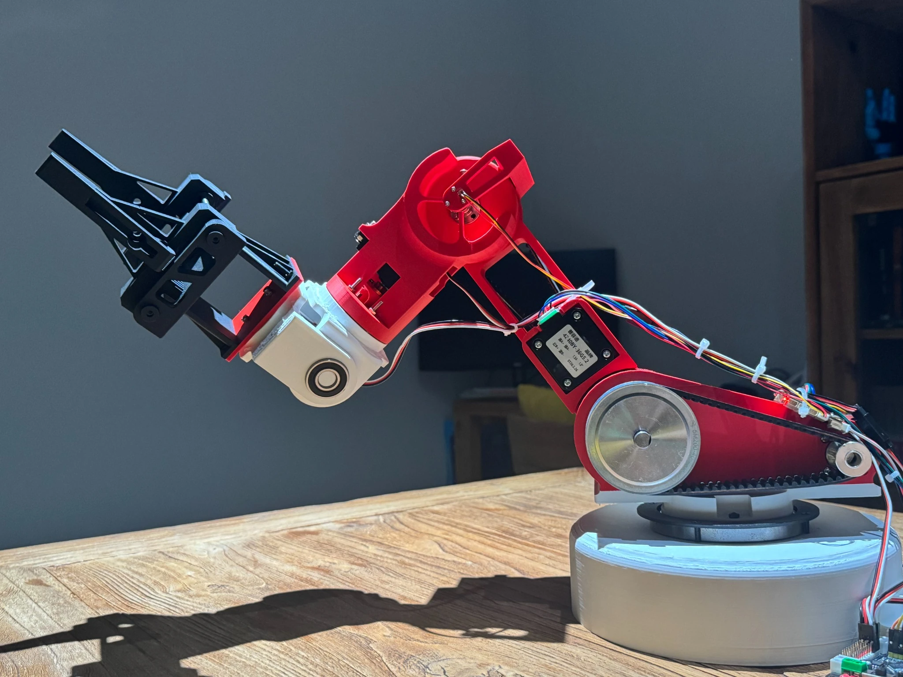

01 / INDEPENDENT · SHANGHAI
W-D1
Robotic Arm
A six-axis manipulator I designed and built across mechanical structure, belt drives, STM32 control, and joint sensing, with a MuJoCo twin for kinematics and trajectory work.
View project ↗Prototype v1 · 2026